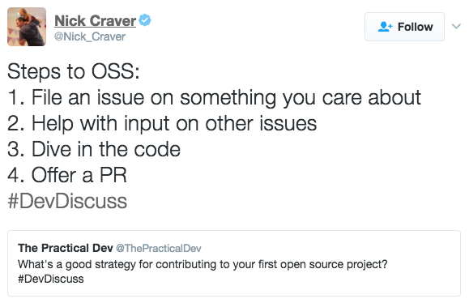
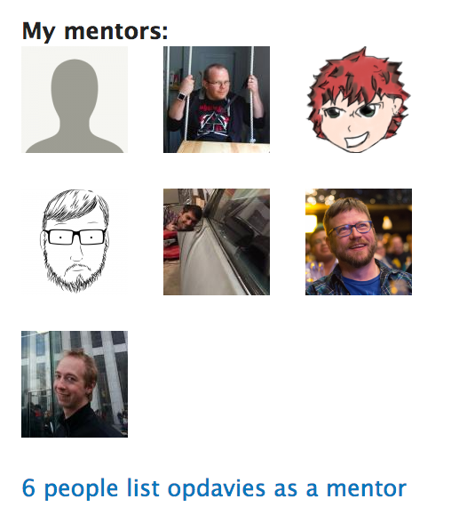
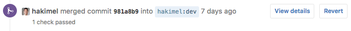

It All Started With A Patch
Getting into open source
A presentation by Oliver Davies
(@opdavies)
https://joind.in/talk/98504
Oliver Davies
- Senior Developer at Appnovation Technologies
- Open source enthusiast
- Working with OSS full-time since 2010
- Drupal core contributor, mentor, module maintainer.
- One of over 3,800 contributors to Drupal 8 to date


Why Contribute to Open Source?
-
Pay it forward
“There's a module for that.”
-
Be part of a community
“If you work in open source you get thousands of extra colleagues”
- Be a better developer
- Better career prospects
- Recognition
Getting Started
Mentoring
- Assist new and inexperienced contributors.
- Mentored code sprints.
- IRC/Slack office hours.
- https://www.drupal.org/core-mentoring
- https://php-mentoring.org
- Google Summer of Code

Types of Contribution
- Report/fix a bug
- Review an existing patch, help diagnose an issue
- Write a test
- Documentation updates
- Translations
- Test a new release
- Write a blog post, record a screencast
Finding Something to Work On
- Start with something small.
-
Novice tag on Drupal.org.

- up-for-grabs and first-timers-only tags on GitHub.
- http://yourfirstpr.github.io
- http://www.firsttimersonly.com
Making Changes
Patches
- One canonical version
- Clone the repository
- Make and commit changes locally
- Create a patch file (
git diff,git format-patch) - Patch uploaded to issue queue and reviewed
Pull Requests
- Multiple versions
- Fork the repository
- Make, commit, push changes
- Create PR
- PR is reviewed

Takeaways
- Reviewers and maintainers are not scary (honest!).
- People are reviewing the code, not reviewing you.
- Not all changes will be accepted.
-
Be aware of different workflows, guidelines per project.
README,CONTRIBUTING.mdfiles. - Engage with the community.
- Contribute in person if possible (code sprints/hackathons).